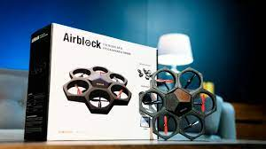

About Me
Lisul Elvitigala

As a highly motivated high school student, I have a passion for programming and 3D printing. I am also a co-founder and co-president of both the H.B.T.’s Coding Club and ACS ChemClub, which has helped me develop valuable leadership and organizational skills. I have advanced skills in spreadsheets, slides, and documents, as well as fluency in English, Spanish, and Sinhalese.

As a programmer for FIRST Robotics, I have developed skills in electrical engineering and pneumatics. I enjoy using these skills to build robots that can solve real-world problems. I am also interested in exploring new technologies and how they can be used to improve people's lives.